Ontology Analyzer
AST-based code structure visualization, security scanning & LLM-assisted analysis
Ontology Analyzer is a desktop tool for visually analyzing relationships between classes, methods, and functions in source code. Select a folder and it will parse the code, rendering call relationships, inheritance structures, and import dependencies as an interactive graph.
Built with an Electron + React frontend and Python FastAPI backend, all dependencies are bundled so it is ready to use immediately after installation, even in offline environments.
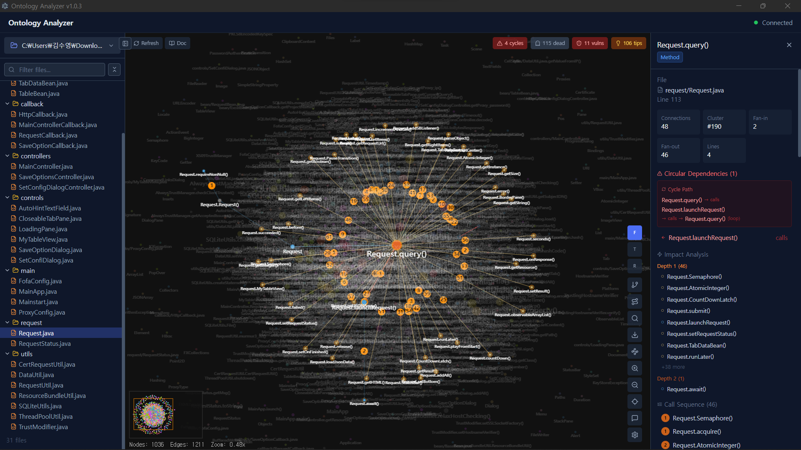
Supported Languages
| Language | Extensions | Parsing Scope |
|---|---|---|
| Java | .java | Classes, interfaces, methods, inheritance, call graph |
| Python | .py | Modules, classes, functions, imports |
| TypeScript / JavaScript | .ts .tsx .js .jsx .mjs | Modules, classes, functions, imports |
| Go | .go | Functions, imports |
| C / C++ | .c .cpp .cc .h .hpp | Functions, includes |
Architecture
Opening & Adding Files
Ontology Analyzer provides three ways to load source code for analysis:
Open Folder
Click the Open Folder button to select an entire project directory. All supported source files within the folder (and its subdirectories) will be recursively scanned and analyzed. This is the recommended way to analyze a complete project.
Open Files
Click the Open Files button to select one or more individual source files.
A file picker dialog opens with filters for supported source file types
(.java, .py, .ts, .tsx, .js, .jsx, .mjs, .go, .c, .cpp, .cc, .h, .hpp).
The selected files replace the current analysis.
Add Files
Click the Add Files button to append additional source files to the current analysis without clearing the existing graph. This is useful for incrementally expanding the scope of analysis by adding related files from different directories.
Circular Dependency Detection
Automatically detects circular import/call relationships using a DFS back-edge algorithm. When a circular reference is found, the edge is highlighted as a red dashed line, and the connections between related nodes are emphasized.
Click the N cycles badge in the top-right corner to navigate through circular dependency nodes sequentially. Clicking a node displays the Cycle Path in the right-side Properties panel, calculated using BFS.
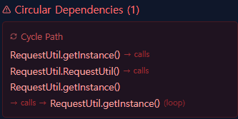
Problems with Circular Dependencies
- Risk of infinite loops
- Difficulty with unit testing
- Change propagation (ripple effect)
- Build order issues
- Reduced code readability and reusability
Dead Code Detection
Detects methods and functions that are never called or referenced anywhere. Nodes with a Fan-in (incoming call count) of 0 are classified as dead code and displayed with gray color, dashed borders, and low opacity.
Click the N dead badge in the top-right corner to navigate through dead code nodes sequentially.
Impact Analysis
Click any node to highlight all nodes that would be affected by changes, explored via 3-level BFS traversal.
View the list of affected nodes at each level in the Impact Analysis section of the right-side Properties panel. Click any node in the list to navigate to it.
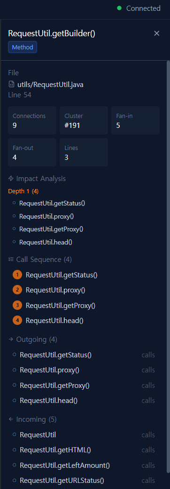
Complexity Metrics
Measured Metrics
| Metric | Description | Calculation |
|---|---|---|
| Fan-in | Number of callers to this node | Count of incoming calls/references edges |
| Fan-out | Number of calls from this node | Count of outgoing calls/references edges |
| Lines | Lines of code in method body | Calculated by { } brace matching |
Visual Representation
- Node size — Proportional to number of connections: more connections → larger circle
- Node color — Heatmap based on Fan-in + Fan-out combined:
- Low (0–2) → Default cluster color
- Medium (3–5) → Orange blending
- High (6+) → Red/orange emphasis
Issues with High-Complexity Nodes
- High Fan-in → Many dependents → Large blast radius when changed
- High Fan-out → Many dependencies → High risk of breakage when any dependency changes
- High Lines → Method is too long → Consider Extract Method refactoring
- Both Fan-in + Fan-out high → "God Method" → Top priority for refactoring
Code Suggestions
After analysis completes, automated suggestions for improving code quality are generated. Click the N tips badge in the top-right corner to open the suggestions panel.
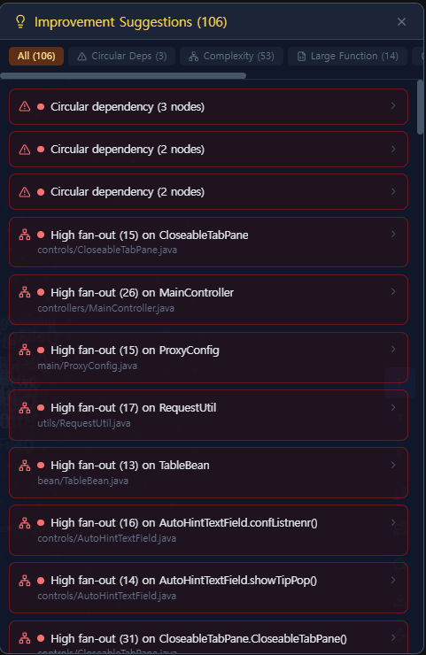
Detection Rules (9 types)
| Category | Detection Condition | Priority |
|---|---|---|
| Circular Deps | Connected components with circular reference edges | High |
| Security | Semgrep vulnerabilities grouped by severity | High~Low |
| High Fan-In | Fan-in ≥ 8 (medium), ≥ 12 (high) | Med~High |
| High Fan-Out | Fan-out ≥ 8 (medium), ≥ 12 (high) | Med~High |
| Large Function | Lines ≥ 40 (medium), ≥ 80 (high) | Med~High |
| Hub Node | Fan-in + Fan-out ≥ 15 (each < 8) | Med~High |
| Deep Inheritance | extends chain depth ≥ 3 | Medium |
| Wide Interface | Class methods ≥ 10 (med), ≥ 15 (high) | Med~High |
| Dead Code | Unreferenced functions (grouped by file) | Low |
Using the Suggestions Panel
- Category filter — Use top tabs to filter by specific category
- Expand card — Click a suggestion card to expand detailed description and related node list
- Navigate to node — Click a related node to focus and navigate to it on the graph
- Priority colors — Red = High, Orange = Medium, Gray = Low
Vulnerability Scanning (Semgrep)
Uses Semgrep (an open-source AST-based SAST tool) for code security vulnerability detection. Applies bundled custom rules along with thousands of security rules maintained by the Semgrep community.
Nodes with vulnerabilities display a red dot indicator. Click the N vulns badge in the top-right corner to navigate through vulnerable nodes sequentially, and click a node to view detailed information in the Security Issues section of the Properties panel.
Severity Mapping
| Semgrep Level | Display Severity | Description |
|---|---|---|
| ERROR | Critical | Remote Code Execution (RCE) or full data exfiltration possible |
| WARNING | High | File system access, data leakage, or security bypass possible |
| INFO | Medium | Security weakness or vulnerability requiring additional conditions |
Detection Categories
| Category | Detection Items |
|---|---|
| Injection | SQL Injection, Command Injection, LDAP Injection, XSS, Template Injection |
| Crypto | Weak Cipher, Hardcoded Keys, Insecure TLS, Insecure Random |
| Auth | Hardcoded Credentials, Session Fixation, CSRF Disabled |
| Data Flow | Path Traversal, SSRF, Open Redirect, Unsafe Deserialization |
| Code Quality | eval/exec Usage, Prototype Pollution, Race Condition |
Supported Languages
AST-based analysis provides more accurate detection than regex. Supports 30+ languages.
Graph Interaction
| Action | Effect |
|---|---|
| Click node | Select — opens Properties panel on the right |
| Hover node | Shows code preview tooltip after 400ms |
| Drag node | Repositions node (force layout re-stabilizes) |
| Scroll wheel | Zoom in/out |
| Click + drag background | Pan the canvas |
| Ctrl+F | Open node search |
| Esc | Close search / clear selection |
Toolbar Buttons
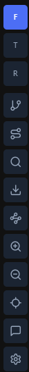
| Button | Function |
|---|---|
| F | Force layout — physics simulation-based |
| T | Tree layout — left-to-right hierarchy |
| R | Radial layout — concentric circles |
| GitBranch | Inheritance Tree — filter extends/implements only |
| Route | Method Trace — bidirectional call chain tracking |
| Search | Node Search — find nodes by name (Ctrl+F) |
| Download | Export PNG — save graph as image |
| Waypoints | Mermaid Diagrams — Class / Flowchart / Sequence |
| Zoom In | Zoom into the graph |
| Zoom Out | Zoom out of the graph |
| Locate | Focus — center view on selected node |
| Chat | LLM Chat — open AI chat panel |
| Settings | LLM Settings — configure provider & model |
Layout Modes
Switch between 3 layout modes using the F T R buttons in the bottom-right corner:
Connected nodes placed close together
Horizontal layout based on call depth
Concentric circles from center node
Node Search
Press Ctrl+F or click the search button in the bottom-right corner to open the search bar. Type a class or method name to display matching nodes, and click any result to navigate to that node on the graph.
Minimap
A miniaturized view of the entire graph is displayed in the bottom-right corner of the canvas. The blue rectangle represents the currently visible area, and you can drag it to quickly navigate to a different region.
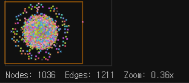
Code Preview
Hover over a node to display a tooltip showing a portion of the method/function source code. The preview includes the file name, line number, and 5 lines of surrounding code context.
Inheritance Tree
Click the GitBranch button in the bottom-right corner to filter only extends/implements relationships and visualize the class hierarchy. Only nodes involved in inheritance relationships are displayed.
Method Trace
Click the Route button in the bottom-right corner to enter a method name and trace its bidirectional call chain. Recursively explores callers and callees centered on the selected method.
Trace results are displayed in a dedicated layout, with only related nodes and edges highlighted in green.
Mermaid Diagrams
Export analyzed code structures as 3 types of diagrams.
Inheritance, implementation, methods
Flow between methods/functions/classes
Sequential calls between participants
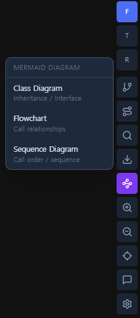
Usage
- Click the Mermaid button in the bottom-right corner
- Select diagram type: Class / Flowchart / Sequence
- Zoom in/out and search in the interactive preview
- Click specific files in the file list to filter
- Use the Copy button to copy the Mermaid code
Class Diagram
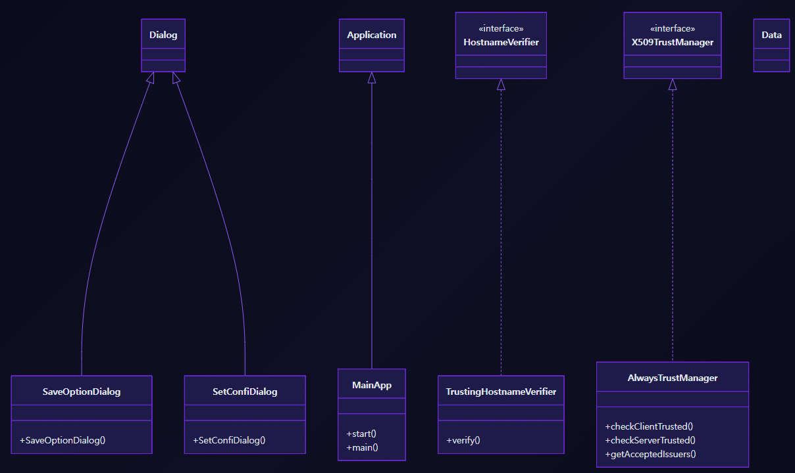
Flowchart
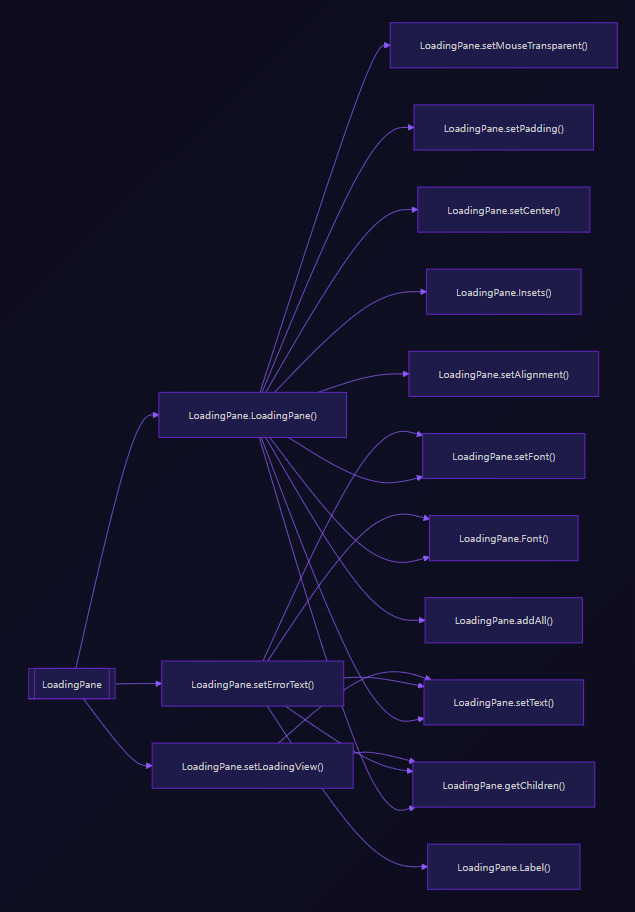
Sequence Diagram
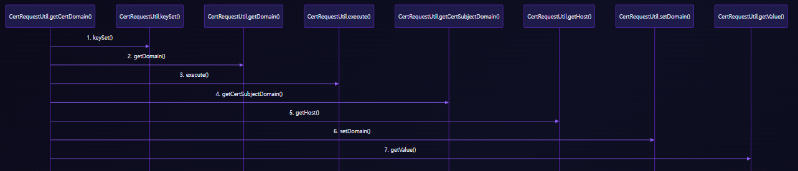
PNG Export
Click the download button in the bottom-right corner to save the current graph as a PNG image. The graph is exported exactly as rendered on the canvas.
LLM Providers
| Provider | API Format | Example Model | Note |
|---|---|---|---|
| OpenAI | openai | gpt-4o | API Key required |
| Ollama (Local) | openai | llama3 | Endpoint: http://localhost:11434/v1 |
| Anthropic | anthropic | claude-sonnet-4-5-20250514 | API Key required |
| Google Gemini | gemini | gemini-pro | API Key required |
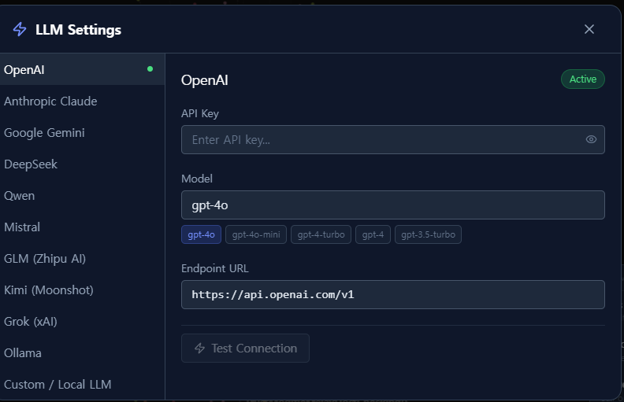
LLM Chat
Chat with AI using code analysis results as context. Click the Chat icon to open the chat panel, which automatically includes graph summaries, selected node details, and vulnerability information.
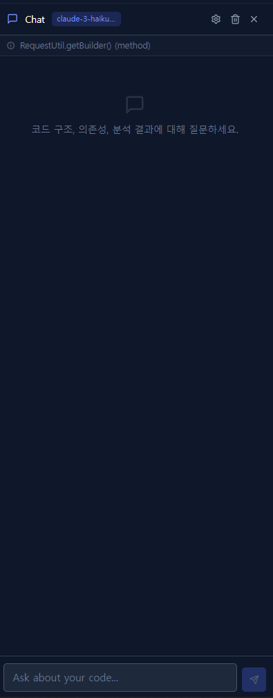
Usage
- Click the Chat icon to open the chat panel
- Configure the LLM provider via the Settings icon
- Ask questions about code structure, dependencies, and security issues
- View real-time output via streaming responses
Example Prompts
Explain the circular dependencies and suggest how to fix themWhat does this selected node do and why does it have high fan-out?Summarize the overall architecture of this projectWhich vulnerabilities are most critical and how do I fix them?Is the dead code safe to remove?What is the impact if I modify this class?Suggest how to refactor the hub nodes to reduce complexityExplain the SQL injection vulnerability in UserService.findByNameWhich classes should I write unit tests for first?Compare the inheritance depth across the codebase and flag any concerns
API Endpoints
| Method | Path | Description |
|---|---|---|
| GET | /api/health | Health check |
| POST | /api/ontology/analyze | Analyze code structure + vulnerabilities |
| POST | /api/ontology/list-files | List supported source files |
| POST | /api/ontology/code-preview | Get code snippet around a line |
| POST | /api/chat | Chat with LLM (streaming SSE) |
| POST | /api/chat/test | Test LLM provider connection |
POST /api/ontology/analyze
Analyzes source code and returns nodes, edges, and vulnerability information.
Request
Response
POST /api/chat
Chat with an LLM including code analysis context. Returns Server-Sent Events (SSE) streaming responses.